and leaves the state
and leaves the state  ; the mean is
; the mean is  .
.
Definition
- Born rule: outcome
 has probability
has probability 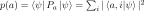
(sum over a degenerate eigenspace) (Born 1926). - State reduction: immediately after, the state is
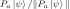
; repeating the measurement yields again. - Expectation value:
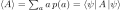
. - Dispersion:
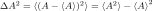
, zero iff is an eigenket.
is an eigenket.
Derivation
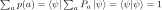
by completeness, so the Born rule is a probability distribution. And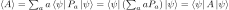
.Worked example
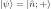
with . Measuring
. Measuring 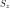
: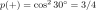
,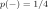
,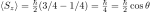
.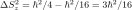
.Engineering applications
Qubit read-out (dispersive measurement of a transmon, fluorescence of a trapped ion) is a projective measurement repeated many times to estimate
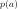
: the number of shots gives a statistical error
gives a statistical error 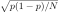
. Quantum key distribution (BB84) relies on the disturbance caused by measuring in the wrong basis.Intuition
The state does not hold a pre-existing value of  ; it holds the probabilities. Measurement is an interaction that picks one value and updates the state accordingly (von Neumann 1932).
; it holds the probabilities. Measurement is an interaction that picks one value and updates the state accordingly (von Neumann 1932).
Pitfall
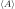
need not be an eigenvalue (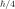
above is never measured): it is an average over many identically prepared systems.